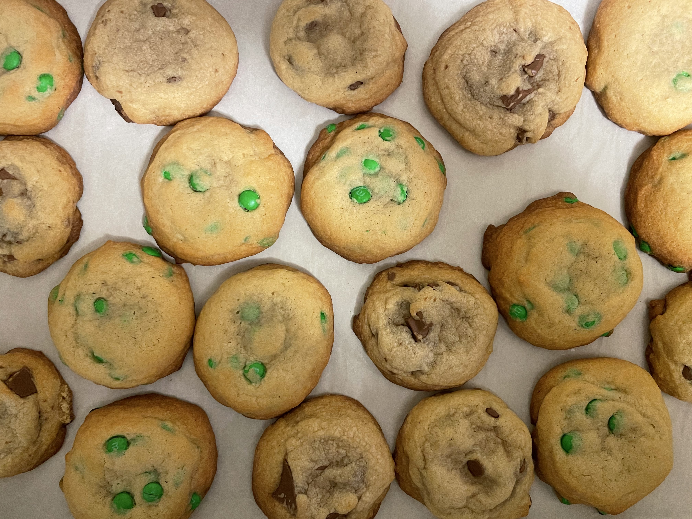
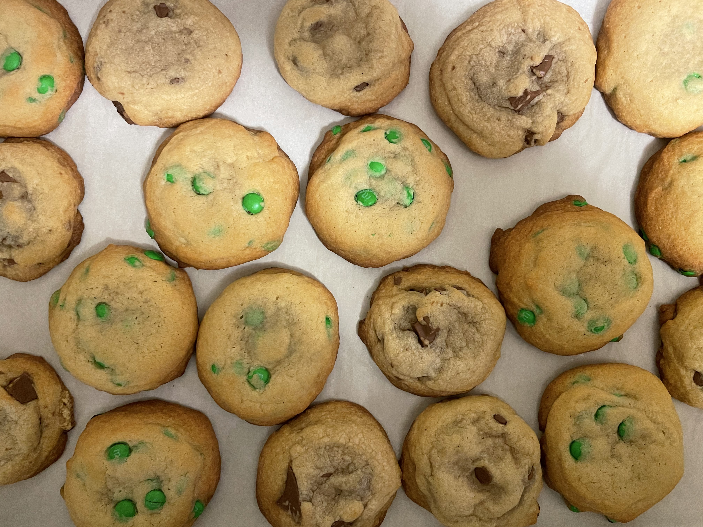
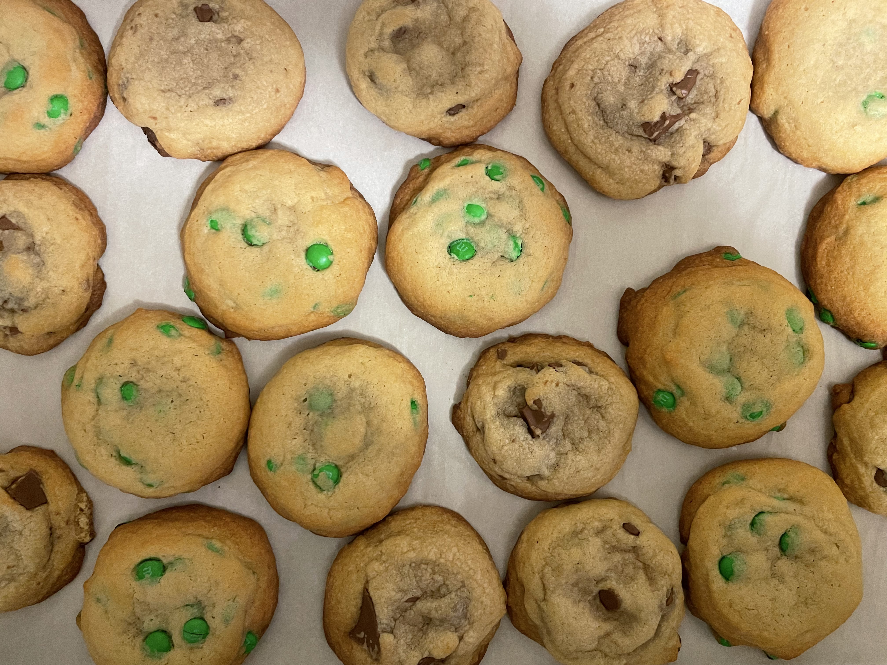
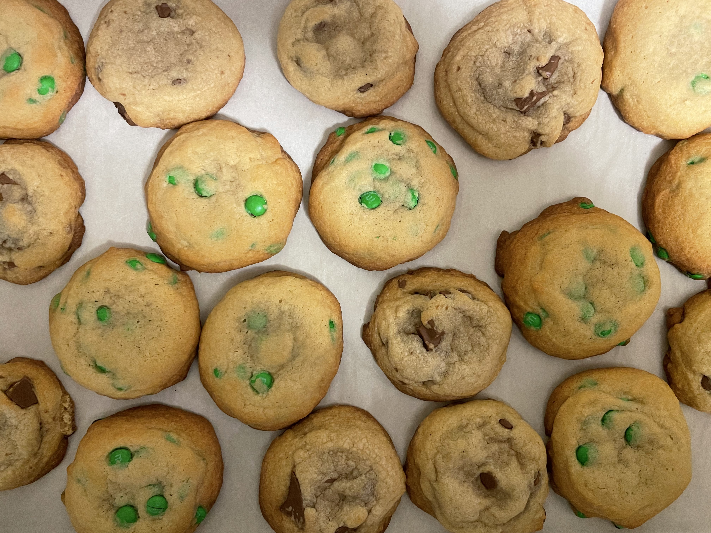

~ Will make about 24 cookies ~
| Holiday Themes | Types of Chocolate To Use |
|---|---|
| Halloween | Reese's Pieces |
| Valentines Day | Hershey's Kisses |
| Christmas | Red & Green M&Ms |
| Easter | Cadbury Mini Eggs |
Wait for melted butter & sugars to cool before adding the egg to make sure you don't cook the eggs.
Whisk wet ingredients until full encorporated.
Make sure not to overmix!
Scoop cookie's to be the same size for an even bake!
Baking time will be different depending on the size of the cookie
* except for mark